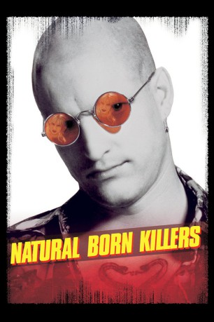

#1486 Natural Born Killers
 
 IMDB-Wertung: 7.3 / 10
IMDB-Wertung: 7.3 / 10  Metascore: 74
Metascore: 74 
Das psychotische Pärchen Mickey und Mallory Knox zieht durch die Wüste von New Mexico und tötet aus purer Mordlust innerhalb von drei Wochen 52 Menschen. Bei den Massakern hinterlassen Sie jeweils eine lebende Person, die ihre Geschichte erzählen soll. Während die sensationslüsternen Medien die "M&M Murders" zu regelrechten Stars befördern, hängt sich der nicht weniger wahnsinnige Cop Scagnetti an ihre Fersen, der sie schließlich fassen kann. Im Hochsicherheitstrakt erklärt sich Mickey zu einem Interview mit dem Skandal-Journalisten Gale bereit, das vor laufender Kamera zu einer Katastrophe wird.
Jahr: 1994
Dauer: 118 Minuten
FSK: 18
Land: USA Studio: Warner Bros.Tonspuren: DD5.1 - ,
Untertitel:
Auflösung: 1080p (1920x1080) Größe: 10444 MB
Genre: Drama, Krimi
Regisseur:  Oliver Stone
Oliver Stone
Drehbuch: Quentin Tarantino, David Veloz, Richard Rutowski, Oliver Stone
Soundtrack: Brent Lewis
Darsteller:
 Woody Harrelson als Mickey Knox
Woody Harrelson als Mickey Knox Juliette Lewis als Mallory Knox
Juliette Lewis als Mallory Knox Tom Sizemore als Det. Jack Scagnetti
Tom Sizemore als Det. Jack Scagnetti- Rodney Dangerfield als Ed Wilson, Mallory's Dad
 Jared Harris als London Boy
Jared Harris als London Boy Pruitt Taylor Vince als Deputy Warden Kavanaugh
Pruitt Taylor Vince als Deputy Warden Kavanaugh Edie McClurg als Mallory's Mom
Edie McClurg als Mallory's Mom- Russell Means als Old Indian
 O-Lan Jones als Mabel
O-Lan Jones als Mabel Robert Downey Jr. als Wayne Gale
Robert Downey Jr. als Wayne Gale Richard Lineback als Sonny
Richard Lineback als Sonny Kirk Baltz als Roger
Kirk Baltz als Roger- Ed White als Pinball Cowboy
 Maria Pitillo als Deborah
Maria Pitillo als Deborah Sean Stone als Kevin
Sean Stone als Kevin Melinda Renna als Antonia Chavez
Melinda Renna als Antonia Chavez Dale Dye als Dale Wrigley
Dale Dye als Dale Wrigley Edward Conna als Gerald Nash
Edward Conna als Gerald Nash- Evan Handler als David
- Matthew Faber als Kid #1
 Jamie Harrold als Kid #2
Jamie Harrold als Kid #2 Salvator Xuereb als French Boy #1
Salvator Xuereb als French Boy #1- Natalie Karp als French Girl
- Emmanuel Xuereb als French Boy #2
 Balthazar Getty als Gas Station Attendant
Balthazar Getty als Gas Station Attendant- Sally Jackson als Mickey's Mom
 Red West als Cowboy Sheriff
Red West als Cowboy Sheriff- Jeremiah Bitsui als Young Indian Boy
- Lorraine Farris als Pinky
 Tommy Lee Jones als Warden Dwight McClusky
Tommy Lee Jones als Warden Dwight McClusky Glen Chin als Druggist
Glen Chin als Druggist Steven Wright als Dr. Emil Reingold
Steven Wright als Dr. Emil Reingold Joe Grifasi als Deputy Sheriff Duncan Homolka
Joe Grifasi als Deputy Sheriff Duncan Homolka Carl Ciarfalio als Mallory's Guard #2
Carl Ciarfalio als Mallory's Guard #2 Louis Lombardi als Deputy Sparky
Louis Lombardi als Deputy Sparky Ashley Judd als Grace Mulberry , scenes deleted
Ashley Judd als Grace Mulberry , scenes deleted Rachel Ticotin als Wanda Bisbing , scenes deleted
Rachel Ticotin als Wanda Bisbing , scenes deleted Adrien Brody als Cameraman , uncredited
Adrien Brody als Cameraman , uncredited Paul Dillon als Prison Inmate Who Breaks TV , uncredited
Paul Dillon als Prison Inmate Who Breaks TV , uncredited James Gammon als Redneck's Buddy in the Diner , uncredited
James Gammon als Redneck's Buddy in the Diner , uncredited- Jennifer Say Gan als Asian Reporter , uncredited
 Danny Goldring als Grace Mulberry's father , uncredited
Danny Goldring als Grace Mulberry's father , uncredited Mark Harmon als Mickey Knox in Wayne Gale's Reconstruction , uncredited
Mark Harmon als Mickey Knox in Wayne Gale's Reconstruction , uncredited Arliss Howard als Owen Traft, Mickey & Mallory's Guardian Angel / The Demon , uncredited
Arliss Howard als Owen Traft, Mickey & Mallory's Guardian Angel / The Demon , uncredited- Boris Karloff als The Monster , archive footage, uncredited
 Denis Leary als Himself, scenes deleted , uncredited
Denis Leary als Himself, scenes deleted , uncredited- Don Murphy als Prison Guard , uncredited
 David Pasquesi als Cameraman , uncredited
David Pasquesi als Cameraman , uncredited Robyn Reede als Lady Cop , uncredited
Robyn Reede als Lady Cop , uncredited O.J. Simpson als Himself , archive footage, uncredited
O.J. Simpson als Himself , archive footage, uncredited
Datei: X:\FSK18-1900-1999\Natural Born Killers (1994, FSK18, 1920x1080).mkv seit 10.07.2015
Festplatte: FSK18
 Es gibt insgesamt 108 Filme in der Gruppe 'FSK18-1900-1999'
Es gibt insgesamt 108 Filme in der Gruppe 'FSK18-1900-1999'